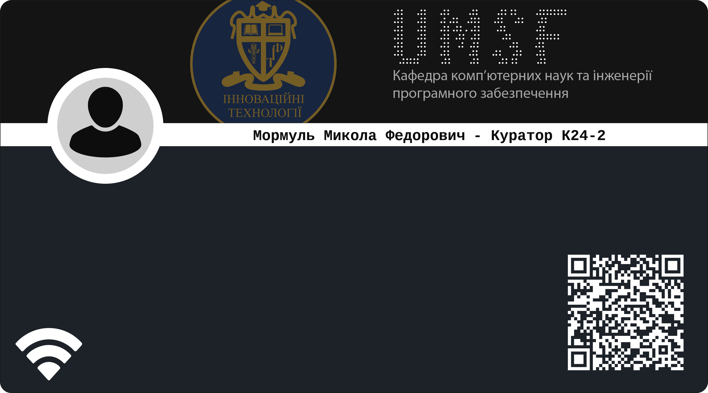

Мормуль Микола Федорович
Доцент кафедри комп’ютерних наук та інженерії програмного забезпечення
Куратор академічної групи К24-2.
Керівник студентського наукового гуртка «Математичне моделювання, аналіз та оптимізація
інформаційних, технічних та економічних систем».
Автор наукових публікацій у періодичних виданнях, які включені до наукометричних баз, Scopus або
WebofScienceCoreCollection, рекомендованих МОН:
About
У 1978 році закінчив Дніпропетровський державний університет (спеціальність «Прикладна математика») та
здобув кваліфікацію математика.
У 1990 році присуджено науковий ступінь кандидата технічних наук за спеціальністю 01.02.03 – будівельна
механіка. Тема дисертації «Багатокритеріальна оптимізація композитних панелей та циліндричних оболонок
за допомогою людино-машинних процедур».
У 1993 році присвоєно вчене звання доцента кафедри вищої математики.
У 2022 році закінчив Університет митної справи та фінансів та здобув кваліфікацію: ступінь вищої освіти
магістр галузь знань “Інформаційні технології” спеціальність “Комп’ютерні науки”.
Дисципліни, що викладає: Лінійна алгебра та аналітична геометрія, Математичний аналіз,
Комп’ютерна дискретна математика, Диференціальні рівняння, Математика для економістів (вища математика,
економічні моделі та методи, економетрика), Вища математика, Теорія ймовірностей і математична
статистика, Методи оптимізації та дослідження операцій, Чисельні методи, Спеціальні розділи вищої
математики, Інформаційні технології, Математичні основи інформатики, Теоретична механіка.
Сфера наукових інтересів: математичне моделювання, методи оптимізації, статистика та
оптимізація економічних та технічних систем, теорія ризиків, методи прийняття управлінських рішень.
